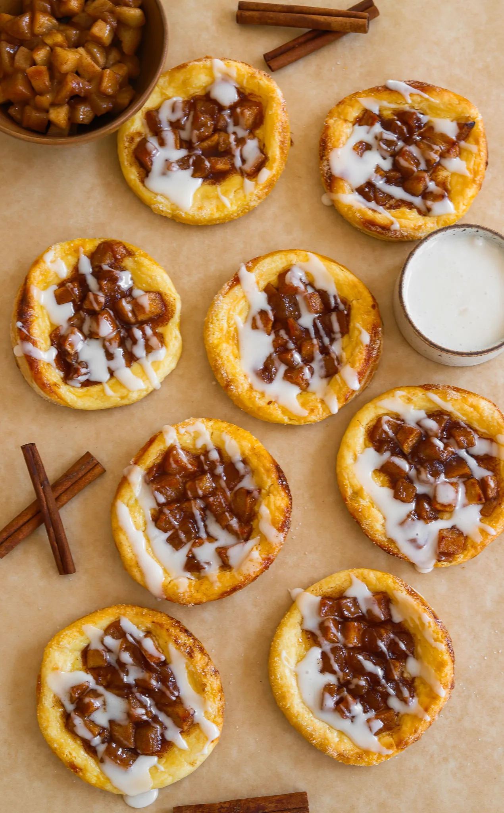

DESSERT
APPLE PIE DANISHES
PREP TIME: 40 MINUTES
COOK TIME: 20 MINUTES
TOTAL TIME: 1 HOUR
YIELDS: 8 TO 10 DANISHES
These apple cream cheese danishes taste like they came straight from
a bakery, but they’re so easy to make at home! Flaky, buttery puff
pastry with a creamy layer of sweetened cream cheese and tender
cinnamon-spiced apples – every bite is a dream. Perfect for breakfast,
dessert, or a cozy afternoon treat!
JUMP TO RECIPE
DESSERT
APPLE PIE DANISHES
These apple cream cheese danishes taste like they came straight from
a bakery, but they’re so easy to make at home! Flaky, buttery puff
pastry with a creamy layer of sweetened cream cheese and tender
cinnamon-spiced apples – every bite is a dream. Perfect for breakfast,
dessert, or a cozy afternoon treat!
PRINT RECIPE
PIN RECIPE
PREP TIME: 40 MINUTES
COOK TIME: 20 MINUTES
TOTAL TIME: 1 HOUR
YIELDS: 8 TO 10 DANISHES
INGREDIENTS
APPLE PIE FILLING:
- 2 large Granny Smith apples, peeled and cubed
- 3 tablespoons unsalted butter
- 1/3 cup light brown sugar
- 1 1/4 teaspoon cinnamon
- a pinch of salt
- 1 teaspoon vanilla extract
- 1/2 tablespoon lemon juice
- 2 teaspoons cornstarch
- 1 tablespoon water
CHEESE FILLING:
- 8 ounces cream cheese, softened
- 1/4 cup granulated white sugar
- 1 egg yolk
- 1 teaspoon vanilla extract
EGG WASH:
- 1 large egg
- 1 tablespoon whole milk
ICING GLAZE:
- 1 cup powdered sugar
- 2 tablespoons whole milk or heavy cream
- 1/2 teaspoon vanilla extract
OTHER:
- 2 puff pastry sheets
- granulated white sugar,for sprinkling
INSTRUCTIONS
PREPARE APPLE FILLING:
- In a medium pan, melt the butter over medium heat.
- Add the cubed apples, brown sugar, cinnamon, and a pinch of
salt. Cook until the apples soften, about 5-7 minutes.
- Stir in the vanilla extract, lemon juice, cornstarch, and
water. Continue cooking until the mixture thickens, about 2
minutes.
- Remove from heat and let the apple mixture cool.
PREPARE CHEESE FILLING:
- In a bowl, mix the softened cream cheese, sugar, egg yolk, and
vanilla extract until smooth and creamy. Set aside.
ASSEMBLE DANISHES:
- Roll out the puff pastry sheets on a floured surface and cut
each sheet into circles using a large cookie cutter or a
glass.
- Using a smaller cutter, lightly score a smaller circle about
3/4 of the way through the dough in the center of each larger
circle. This will help keep the center from rising too much
during baking.
- Spoon about 1 tablespoon of the cream cheese filling into the
center of each scored circle.
- Top the cream cheese mixture with a spoonful of the cooled
apple filling.
- Whisk the egg and milk together in a small bowl. Brush the
outer edges of the pastry with the egg wash.
- Sprinkle a little granulated sugar over the edges.
BAKE THE DANISHES:
- Preheat your oven to 400°F (200°C).
- Bake the danishes for 15-20 minutes or until the puff pastry
is golden and flaky.
THE ICING
- In a small bowl, whisk together the powdered sugar, vanilla
extract, and milk or cream until smooth. Adjust the consistency
with more milk if necessary.
- Once the danishes are out of the oven and fully cooled, drizzle
the icing over them and enjoy!